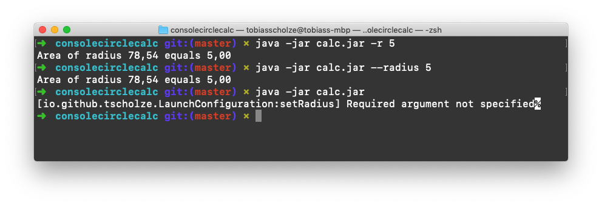

Man möchte es nicht glauben. Programme welche durch die Konsole / Terminal aufgerufen werden sind immer noch ein elementarer Bestandteil der modernen IT.
Zu dem Grund wieso beziehungsweise weshalb ich dies wieder gemerkt habe folgt in der Zukunft ein weiterer Artikel – hoffe ich.
Unter Java gibt es viele verschiedene Möglichkeiten mit übergebenen Argumenten aus der Konsole zu arbeiten.
Nehmen wir als Beispielsaufruf:
Hierbei soll die Kreisfläche anhand eines Radius ermittelt werden.
java -jar calc.jar -r 5
Das wohl Offensichtlichste:
Die standardmäßige main-Methode hat bereits die übergebenen Parameter in Form eines Arrays als Übergabeparameter.
public static void main( String[] args){
// args[0] = "-r"
// args[1] = "5"
}
Bequemer mit externen Dependencies:
Es wäre nicht Java wenn sich viele Menschen einen, für den Entwickler, bequemeren Weg ausgedacht hätten und diese in Form von Maven-Abhängigkeiten auch teilen.
Eines hiervon ist commandline von Jan Kroken. Hierbei dient ein annotiertes Model als Konfiguration in welche die übergebenen Argumente geparsed werden. Anschließend stehen alle Werte als Klassenattribute zur Verfügung.
Der komplette Quelltext ist bei mir auf GitHub einsehbar.
public class LaunchConfiguration {
private double radius;
/**
* Gets the radius.
* @return radius value.
*/
public double getRadius() {
return radius;
}
/**
* Sets the radius.
*/
@Option
@Required
@SingleArgument
ShortSwitch("r")
@LongSwitch("radius")
public void setRadius(String radius) {
this.radius = Double.valueOf(radius);
}
}
Die Auswertung und Benutzung kann anschließend an beliebigen Stellen stattfinden an denen die Übergabeargumente zur Verfügung stehen.
public class App {
public static void main( String[] args ) {
try {
LaunchConfiguration configuration = CommandLineParser.parse(LaunchConfiguration.class, args, OptionStyle.LONG_OR_COMPACT);
double radius = configuration.getRadius();
double area = Calculator.calculateArea(radius);
System.out.println(String.format("Area of radius %.2f equals %.2f", area, radius))
}
catch (InvalidCommandLineException | InvalidOptionConfigurationException | UnrecognizedSwitchException | IllegalAccessException | InstantiationException | InvocationTargetException e) {
System.out.print(e.getLocalizedMessage());
}
}
}
Was ich mir hierbei wünschen würde, wäre eine via Annotation gesteuerte Umwandlung von Datentypen. An dem oben angeführten Beispiel wäre es die Umwandlung von String-Werten, was alle Argumente sind, hinzu dem von Programm benötigten Typ double.
Da commandline Open-Source ist, kann man natürlich einen entsprechenden Patch einreichen. *hm*.

Zurück